——從 500 萬元罰鍰的撤銷，看行政裁量之司法審查
一審 臺中高等行政法院 111 年度訴字第 27 號（原告之訴駁回）
二審 最高行政法院 111 年度上字第 850 號（原判決廢棄；原處分撤銷）
爭點核心 主管機關未依裁罰公式計算即裁處法定最高額，是否構成裁量怠惰
謝秉錡律師事務所
謝秉錡律師 劉靜芬律師 何博彥律師 林育正律師 陳儒學習律師
中華民國 115 年 9 月 27 日
| 項目 | 內容 |
|---|---|
| 場所 | 台電台中發電廠麗水場區（臺中市龍井區龍昌路 1 號） |
| 時間 | 110 年 6 月 10 日上午 8 時 36 分許 |
| 事件 | 煤炭輸送帶輸送煤炭過程中起火燃燒，產生大量黑煙（明顯粒狀污染物）及燃燒煤炭異味 |
| 起火點 | 輸煤轉運塔 TR-62 與輸煤支撐塔 TR-2 間之輸煤皮帶（編號 C-2A／2B／2C） |
| 起火原因 | 落煤黏著於滾軸（滾輪軸承），摩擦生熱引燃 |
| 燃燒面積 | 約 4,000 平方公尺 |
| 擴散範圍 | 臺中市龍井以南、彰化縣伸港鄉、線西鄉、和美鎮、鹿港鎮 |
★ 火源不是堆置的煤炭自燃，而是「輸送設備的機械故障」——在第 8 頁將成為關鍵爭點。
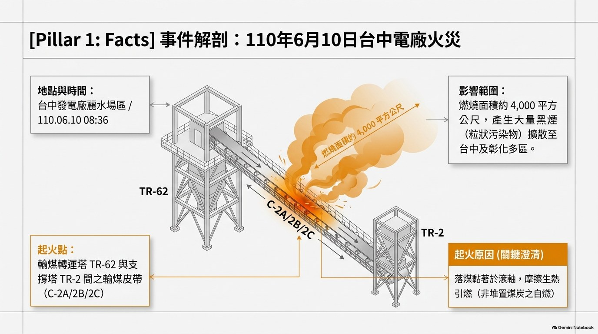
| 時點 | PM2.5 測值 | 說明 |
|---|---|---|
| 8:32 | 177 mg/m³ | 下風處測得之最高值 |
| 8:36 | 90 mg/m³ | 現場稽查測得 |
| 10:30 | 16.78 mg/m³ | 已明顯下降 |
| 14:37 | 4 mg/m³ | 接近背景值 |
★ 台電反證之數據
| 來源 | 數據 |
|---|---|
| 鄰近監測站 PM10 | 最高僅 48 μg/m³ |
| 當日空氣品質指標（AQI） | 良好 |
機關所憑的是「兩個時點」的高值；高值維持多久不得而知——兩組數據的落差是第三爭點的核心。
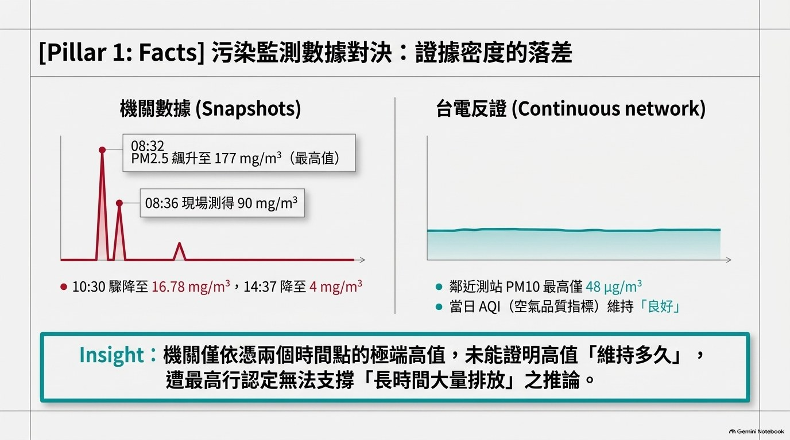
| 階段 | 內容 |
|---|---|
| 原處分 | 中市環保局 110.07.16 中市環稽字第 1100067610 號函附裁處書（字號 20-110-070007） |
| 認定條款 | 空污法 §32Ⅰ①（粒狀污染物）；機關於原審審理時追補 §32Ⅰ③（異味污染物） |
| 裁罰 | 罰鍰 500 萬元（法定最高額）＋環境講習 8 小時 |
| 裁罰依據 | 空污法 §67Ⅰ、§96Ⅰ④（情節重大）、行政罰法 §18Ⅰ；裁罰準則 §3Ⅳ① |
| 訴願 | 臺中市政府 110.12.03 訴願決定——駁回 |
| 一審 | 中高行 111 訴 27（111.08.30）——原告之訴駁回 |
| 二審 | 最高行 111 上 850（113.06.27）——原判決廢棄；訴願決定及原處分均撤銷 |
★ 程序性質：自為判決（行政訴訟法 §259①），非發回，不存在「更一審」。
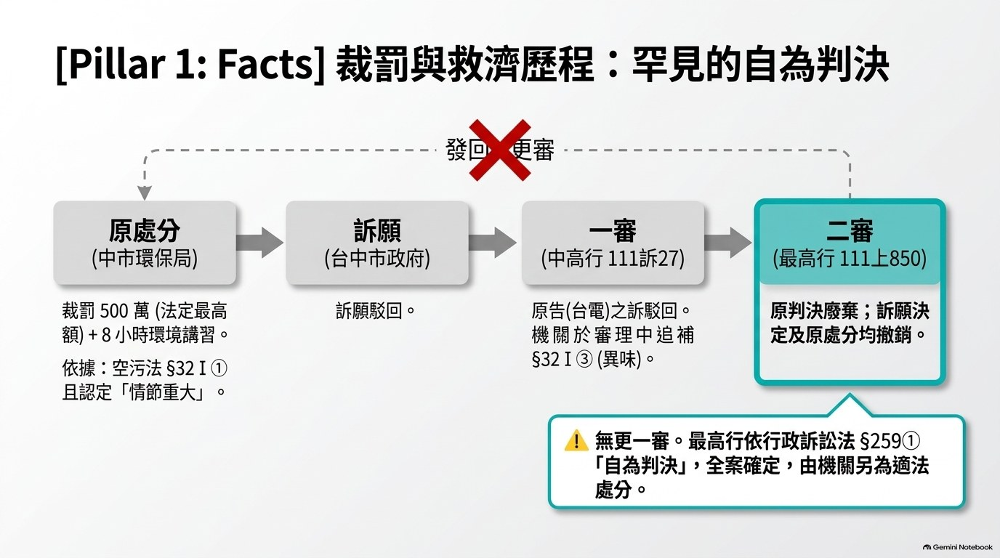
| # | 爭點 | 一審結論 | 二審結論 |
|---|---|---|---|
| 1 | 追補 §32Ⅰ③（異味污染物）是否合法？ | 合法（僅審同一性） | 不合法（本質非同一） |
| 2 | 台電是否違反 §32Ⅰ①（粒狀污染物）？ | 不成立（起火原因不明） | 成立（相當因果關係） |
| 3 | 是否符合「情節重大」（§96Ⅰ④）？ | 成立（三組證據充分） | 機關未盡舉證 |
| 4 | 裁處法定最高額罰鍰有無裁量瑕疵？ | 無裁量瑕疵 | ★ 裁量怠惰、濫用裁量權 |
★ 判決之雙軌結構（最易誤讀處）
| 軸 | 內容 | 有利於 |
|---|---|---|
| 實體軸 | 爭點 2：違規成立 | 主管機關 |
| 程序軸 | 爭點 1、3、4：裁罰違法 | 受罰事業（台電） |
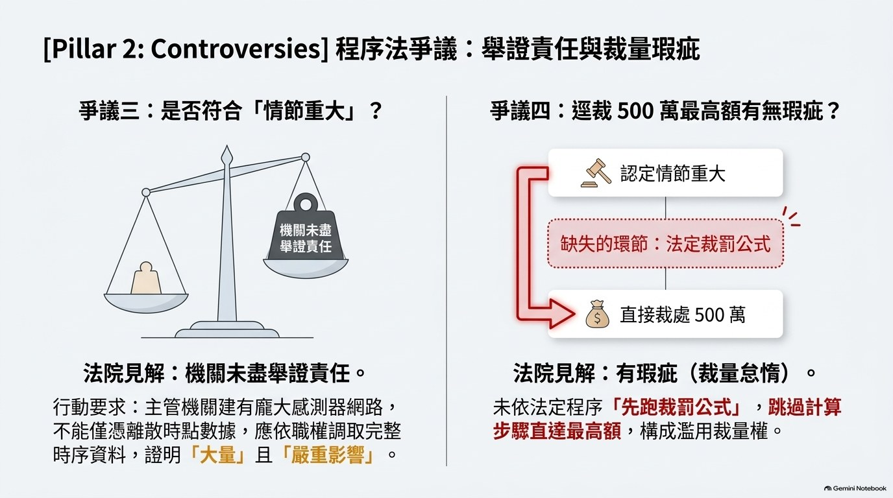
問題：原處分只記載 §32Ⅰ①（粒狀污染物），機關卻在一審審理時追加 §32Ⅰ③（異味污染物）。這是「理由追補」還是「補記理由」？
| 一審 | 二審 | |
|---|---|---|
| 法理依據 | 最高行 107 判 278「有條件肯定說」四要件 | 同前，但實質審查四要件 |
| 審查方法 | 僅審第 1 要件（同一性） | 就行政目的、規制內容、事實關係、法規基礎綜合判斷 |
| 結論 | 追補合法 | 追補不合法 |
★ 二審關鍵論述（判決原文要旨）
「§32Ⅰ① 規範粒狀污染物，同條項第 3 款規範異味污染物，兩者為不同之污染物……其等之行為態樣、測量標準及規範目的等基礎事實均有異，處罰時依個案裁量所考量之因素亦不相同。因此……所形成行政處分之本質並非同一，非屬理由追補可以容許之範疇」
★ §32Ⅰ③ 之立法沿革
| 時點 | 內容 |
|---|---|
| 107.06.25 全文修正 | §32Ⅰ③ 增列「管理不當產生自燃」（原條文無此語） |
| 立法理由 | 明示係針對「堆置物品管理不當，產生堆置物自燃」 |
★ 本案之規範錯置
| 項目 | 內容 |
|---|---|
| §32Ⅰ③ 之文義 | 針對「堆置物品」之「自燃」 |
| 本案起火點 | 輸煤皮帶之機械設備（落煤黏著滾軸摩擦生熱） |
| 涵攝結果 | 並非「堆置物自燃」→ 原審直接援引該款涵攝本案，有立法理由與構成要件之錯置之疑 |
| 最高行之處理 | 回頭適用 ①（「輸送」操作致生粒狀污染物），規範涵攝更為精準 |
問題：火災是「機械設備自己燒起來」，能不能算台電「從事燃燒、輸送等操作致產生粒狀污染物」？
★ 二審判示（判決原文要旨）
「不以污染物係操作行為『直接產生』者為限；行為人於操作過程中因設備維護疏失，或人員操作不當致發生火災而產生空氣污染物，其結果均與其所操作之行為具有相當因果關係。」
★ 被排除之抗辯
| 抗辯 | 評價 |
|---|---|
| 火災之發生源非空污法規範之污染源（環保署 83.12.08 函） | 不可採（最高行 100 判 2081；高雄高行 89 訴 59） |
| 污染物須為操作行為「直接產生」 | 不可採（最高行 111 上 850） |
| 火災產物非「操作行為」所致 | 不可採（最高行 100 判 2081、111 上 850） |
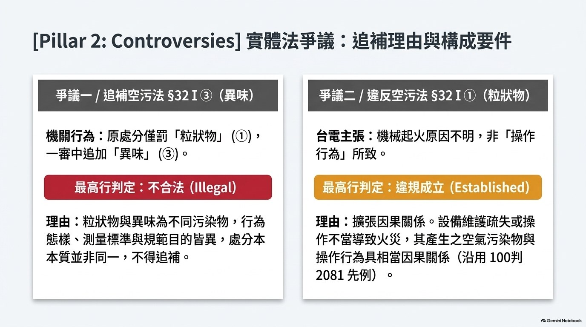
最高行之法理並非新創，而係沿用最高行自己在 100 年度判字第 2081 號（台塑石化麥寮廠案，100.11.30）
| 比較項 | 100 判 2081（台塑石化麥寮廠） | 111 上 850（台電台中電廠） |
|---|---|---|
| 事實 | 重油管線斷裂→大火→大量黑煙（99.07.25–27） | 輸煤皮帶起火→大量黑煙（110.06.10） |
| 判示 | 因設備維護或人員操作不當致管線斷裂……排放大量粒狀污染物，其結果均與其煉製行為具相當因果關係 | 行為人於操作過程中因設備維護疏失或人員操作不當致發生火災……其結果均與其所操作之行為具相當因果關係 |
| 污染物範圍 | 不限於經排放管道排放者 | 完全相同之表述 |
★★ 研究發現（原審最明顯之疏漏）：該 100 判 2081 被告（中市環保局）已於原審答辯中援引（見原審判決三、㈠⒈⑴），原審仍未採 → 屬原審最明顯之法律適用疏漏。
★ 條號轉換注意：100 判 2081 適用 107 年修正前舊法——舊 §31Ⅰ①＝現 §32Ⅰ①、舊 §60＝現 §67、舊 §82⑦＝現 §96Ⅰ⑦；條號雖變，實質內容延續。
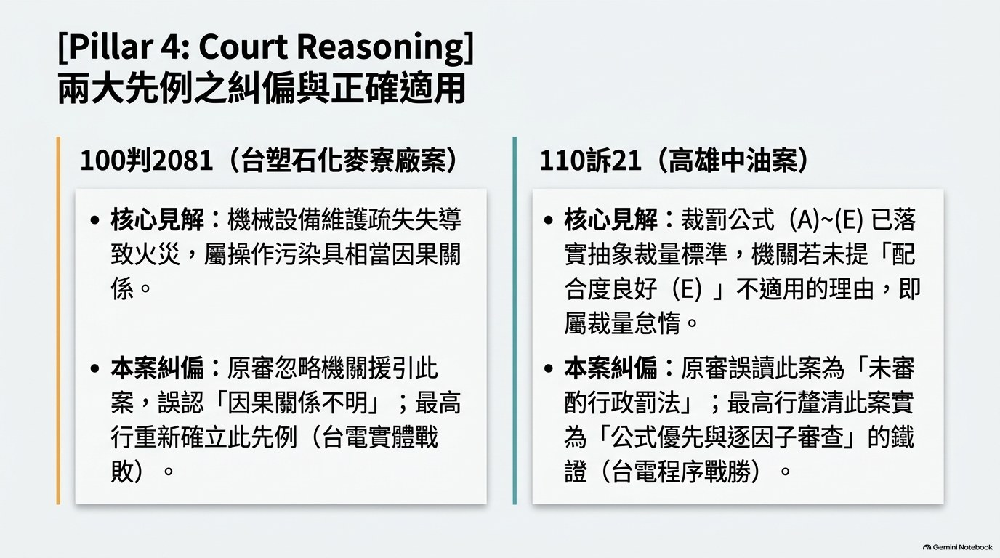
★ 二審对證據之評價（判決原文要旨）
「其於 8 時 32、36 分固在不同位置測得高值，惟僅分別於 10 時 30 分、14 時 37 分測得低值，則高值維持多久不得而知，被上訴人據此即認上訴人『已有長時間大量排放空氣污染，嚴重影響附近空氣品質行為』，自屬速斷。」
★ 最高行揭示之三項舉證要求
| # | 舉證要求 |
|---|---|
| 1 | 具體詳實說明「如何」大量排放、「如何」嚴重影響 |
| 2 | 提出相關證據證明 |
| 3 | 依職權調取感測器數值資料（機關擁有感測器網路，不得僅憑離散時點數據） |
★ 與行政程序法 §36（依職權調查證據）、§9（有利不利一律注意）呼應。機關所提乙證 9（照片顏色幾為綠、黃色）反成「空氣品質良好」之反證。
| 條號 | 內容要旨 | 本案適用 |
|---|---|---|
| §32Ⅰ① | 從事燃燒、融化、煉製、研磨、鑄造、輸送或其他操作，致產生明顯之粒狀污染物 | ★ 本案核心 |
| §32Ⅰ③ | 置放、混合、加熱、管理不當產生自燃或從事其他操作，致產生異味污染物或有毒氣體 | ★ 機關事後追補 |
| §32Ⅱ | 前項空氣污染行為，係指未經排放管道排放之空氣污染行為 | 界定排放方式 |
| §67Ⅰ | 違反 §32Ⅰ各款者，工商廠場處 10 萬元以上 500 萬元以下罰鍰 | ★ 下限＝10 萬元 |
| §67Ⅱ | 情節重大者，得令停止作為、停工、停業（必要時廢止許可） | 未適用 |
| §85Ⅱ | 前項裁罰之準則，由中央主管機關定之 | 授權依據 |
| §96Ⅰ④ | 大量排放空氣污染物，嚴重影響附近地區空氣品質 | ★ 裁 500 萬之依據 |
★ 附註：環保署自 112.08.22 起改制為環境部；判決引用之法條實體內容未因而變動。
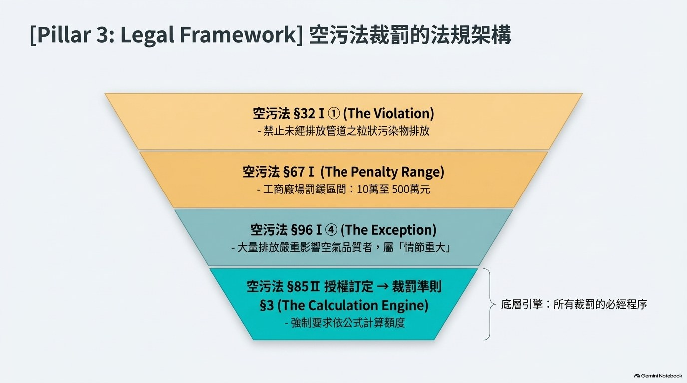
罰鍰額度 ＝ A × B × C × D ×（1＋E）× 罰鍰下限 （裁罰準則 §3Ⅱ）
| 代號 | 意義 | 來源 |
|---|---|---|
| A | 污染程度 | 附表一 |
| B | 污染物項目 | 附表一 |
| C | 污染特性 | 附表一 |
| D | 影響程度 | 附表一 |
| E | 加重或減輕裁罰事項（加重正值／減輕負值，各項相加） | 附表二 |
★ 條文之結構性意義（三道關卡）
| 條號 | 文字要旨 | 意義 |
|---|---|---|
| §3Ⅰ | 「應」以公式計算 | 強制適用公式 |
| §3Ⅳ | 「除依第 2 項規定計算額度外」……得以最高罰鍰裁罰 | 先跑公式為前提 |
| §4 / §3Ⅴ | 上下限封頂／並應依行政罰法 §18Ⅰ 審酌 | 最後一道 |
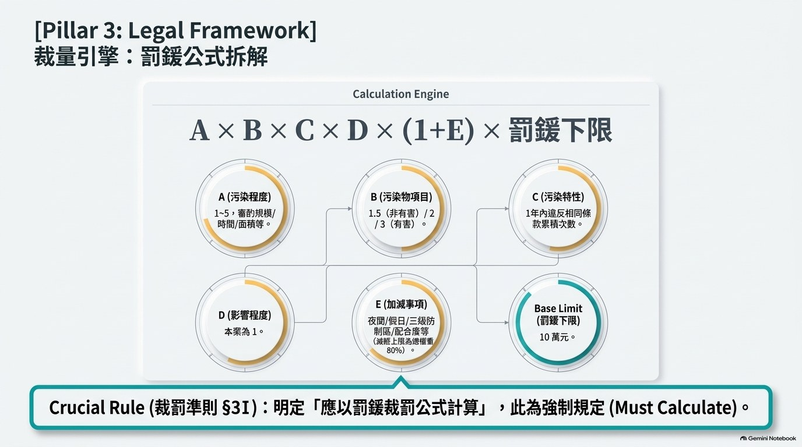
★ 附表一「項次十七」（違反 §32Ⅰ）
| 因子 | 規定 | 本案取值 |
|---|---|---|
| A 污染程度 | 1～5（審酌污染規模、持續時間、面積、範圍與人數、敏感受體，個案裁量） | 5 |
| B 污染物項目 | 非有害 1.5／氮氧化物或 VOCs 2／有害 3 | 1.5 |
| C 污染特性 | 違反本法規定之日（含）前一年內違反相同條款之累積次數 | 5 |
| D 影響程度 | 1 | 1 |
| 罰鍰下限 | 工商廠場 10 萬元 | 10 萬元 |
★ C 因子之認定主體之爭（本案攻防）
| 主張者 | 依據 | 認定主體 | 取值 |
|---|---|---|---|
| 原告（台電） | 環保署 108.01.25 函 | 同一製程 | C＝2 |
| 機關 | 環保署 109.05.06 函 | 公私場所 | C＝5 |
| 原審 | 附表一已明定「相同條款」累積次數 | 相同條款 | C＝5 |
E 因子：本案三級防制區＋0.2（唯一加重）；夜間假日、9月～5月、稽查配合度良好等均未適用。★ 附表二註三：三級防制區之認定，異味污染物不適用。
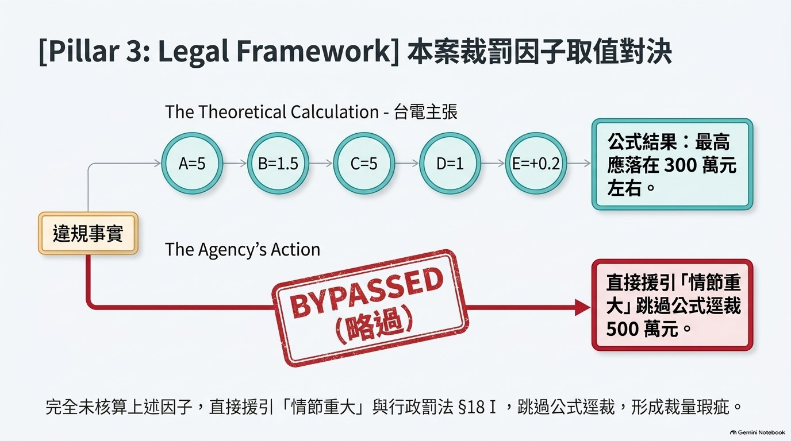
軸一 實體從嚴——違規成立（對機關有利）
火災所生之粒狀污染物與操作行為具相當因果關係，不以「直接產生」為限（沿用 100 判 2081）
軸二 程序從嚴——裁罰違法（對台電有利）
(a) 追補 §32Ⅰ③ 不合法（本質非同一）
(b) 裁罰準則公式為原則，「情節重大」裁最高額為例外
(c) 機關未盡舉證「大量排放」「嚴重影響」
★ 判決結論
| 項目 | 內容 |
|---|---|
| 主文 | 原判決廢棄；訴願決定及原處分均撤銷。由被上訴人再作成適法之處分（行政訴訟法 §259① 自為判決） |
| 環境講習 | 從屬性質——罰鍰撤銷則失所附麗，亦應併予撤銷 |
★ 最高行關於裁罰公式地位之論述（判決原文要旨）
「行為人違反空污法規定應裁處若干罰鍰數額，原則上應先依前揭空污裁罰準則第 3 條規定，藉由裁罰因子計算其罰鍰額度；若認其違反空污法行為『情節重大』，依裁罰準則第 3 條第 2 項所定公式計算裁罰額度猶仍過輕，始例外以空污法第 96 條第 1 項各款規定情節重大情形，而裁處最高額罰鍰額度」
「否則若未遵循及此，逕以『情節重大』為由裁處最高額度罰鍰，空污裁罰準則第 3 條所定裁罰因子公式計算罰鍰額度之規定，將形同具文而無適用之餘地，即有裁量怠惰，屬濫用裁量權而違法」
★ 三段論還原
| 步驟 | 內容 |
|---|---|
| 大前提 | 原則上應先依裁罰準則 §3 公式計算罰鍰額度 |
| 小前提 | 若公式計算「猶仍過輕」，始例外依 §96Ⅰ 裁最高額 |
| 結論 | 若跳過公式，則 §3Ⅱ 公式「形同具文」→ 裁量怠惰，濫用裁量權 |
★ 關鍵詞「形同具文」——最高行的真正理由不是「機關算錯了」，而是「機關根本沒算」。
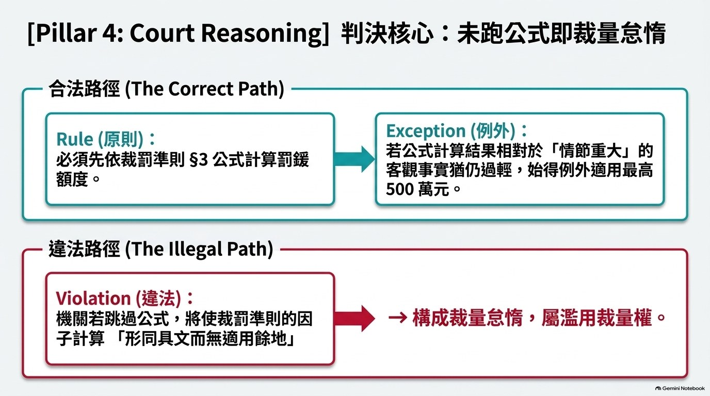
★ 一審（中高行 111 訴 27）之推論結構
「機關可停工而未停工 → 顯見機關已斟酌行政罰法 §18Ⅰ 各項因素 → 無裁量瑕疵」
★ 雙重瑕疵（研究評析）
| # | 瑕疵 | 說明 |
|---|---|---|
| 1 | 邏輯上 | 「未為 A」不能證明「已斟酌 B」。機關可能根本未考慮停工，亦可能未計算公式。反面推論（argumentum ex silentio）不能成立 |
| 2 | 法律上 | 裁罰準則 §3Ⅰ 明文「應以公式計算」，§3Ⅳ 明定「除依第 2 項規定計算額度外」。條文明示「先跑公式」為程序前提，原審完全未審查 |
★ 原告一審即已提出此主張（原審判決二、㈠⒋⑴）——原審僅以「準則已具體化 §18Ⅰ」一語帶過，未實質回應。
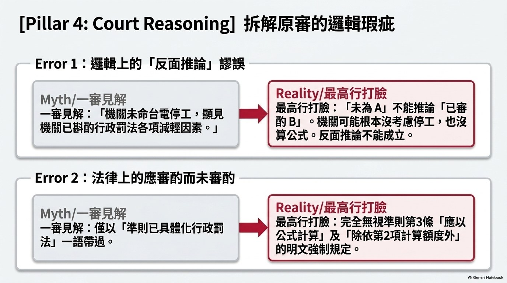
原告一審援引之高雄高等行政法院 110 年度訴字第 21 號（110.05.25）
| 項目 | 內容 |
|---|---|
| 當事人 | 台灣中油股份有限公司石化事業部（原告）v. 高雄市政府環境保護局（被告） |
| 主文 | 訴願決定及原處分均撤銷（中油勝訴） |
| 案情 | 石油腦進料泵軸封滲漏接觸熱源起火→緊急停爐→製程氣體導至廢氣燃燒塔→燃燒不完全生黑煙（109.07.02） |
★★ 原審之轉述與官方原文存在「方向性落差」
| 比對項 | 原審之轉述 | 官方原文 |
|---|---|---|
| §18Ⅰ 之論述 | 「被告單以行政罰法 §18 為由，未具體說明即逕處最高額罰鍰……有裁量怠惰」 | 「原則上無庸重複行政罰法 §18Ⅰ 規定之抽象標準」（即支持「公式優先」） |
| 撤銷之真因 | （轉述為違反比例原則／裁量怠惰） | 裁罰公式（E）項「稽查配合度良好」之裁量怠惰 |
該判決其實是「公式優先」判決，方向與最高行 111 上 850 一致、與原審立場相反。原審將「(E) 因子之裁量怠惰」誤植為「§18Ⅰ 未被審酌之裁量怠惰」，偏移方向剛好有利於機關。
| 層次 | 一審 | 二審 | 影響 |
|---|---|---|---|
| 一、行政處分同一性 | 以「處分書文字有無共同字眼」為準（形式觀察） | 以行政目的、規制內容、事實關係、法規基礎綜合判斷（實質觀察） | 機關不得藉追補不同「款」迴避程序保障 |
| 二、構成要件解釋方法 | 目的性限縮（①限於「行為直接產生」） | 合目的性擴張（設備疏失、操作不當致火災所生污染物均具相當因果關係） | 火災型空污事件仍落入 §32Ⅰ① |
| 三、司法審查密度 | 低密度（適用經授權準則→推定已斟酌） | ★ 中高密度（要求機關就「未適用公式」負說明與舉證責任） | 主管機關裁最高額負「先跑公式＋說明為何公式過輕」雙重義務 |
★ 差異總表（六大爭點）
| # | 爭點 | 一審 | 二審 | 差異性質 |
|---|---|---|---|---|
| 1 | 追補 §32Ⅰ③ | 合法 | 不合法 | 法律解釋之別 |
| 2 | §32Ⅰ① 成立否 | 不成立 | 成立 | 法律適用＋事實評價 |
| 3 | 情節重大之證據 | 成立 | 機關未盡舉證 | 證據評價之別 |
| 4 | 裁罰準則公式地位 | 未審酌 | ★ 原則；未跑＝裁量怠惰 | ★ 審查密度之別 |
| 5 | 裁量說明義務 | 「未停工→已斟酌」 | 須具體說明＋舉證 | ★ 審查密度之別 |
| 6 | 環境講習 | 獨立審查 | 從屬（失其依據） | 規制性質之別 |
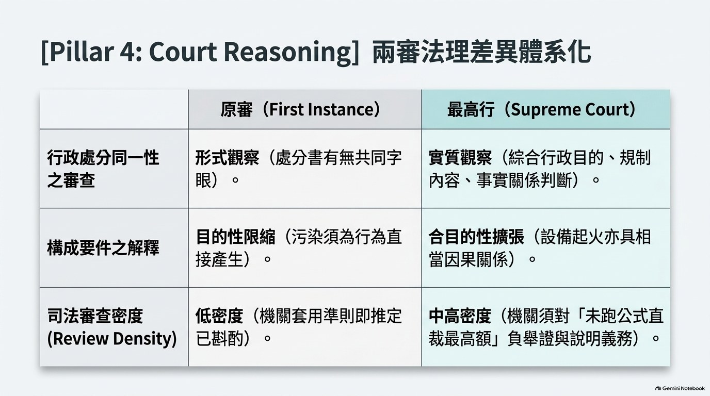
★ 本研究發現之原審五大疏漏
| # | 疏漏 | 說明 |
|---|---|---|
| 1 | 未實質審查追補理由之四要件 | 僅審第 1 要件（同一性），且採形式判斷（以「處分書出現某字眼」等同處分本質同一） |
| 2 | 判斷②與判斷③自我矛盾 | 判斷㈡稱起火原因「尚屬不明」，判斷㈢卻又推論有過失；而原因其實原告自認＝落煤黏著滾軸摩擦生熱 |
| 3 | ★ 漏未審酌裁罰準則 §3Ⅰ「應以公式計算」之明文 | 未審查機關有無跑公式；以「未為更重處分」反面推論「已斟酌」，邏輯不能成立 |
| 4 | 被告已援引最高行 100 判 2081，原審仍未採 | 屬明顯之法律適用疏漏 |
| 5 | ★ 對高雄高行 110 訴 21 之轉述與原文方向性落差 | 該判決實為「公式優先」判決，撤銷真因為（E）項裁量怠惰 |
★ 對原告「行政自我拘束原則」主張之未回應：原告主張前案（109 年揚塵案）曾依裁罰準則計算為 45 萬元，本案卻不適用準則；原審幾未正面回應——屬論證之斷層。
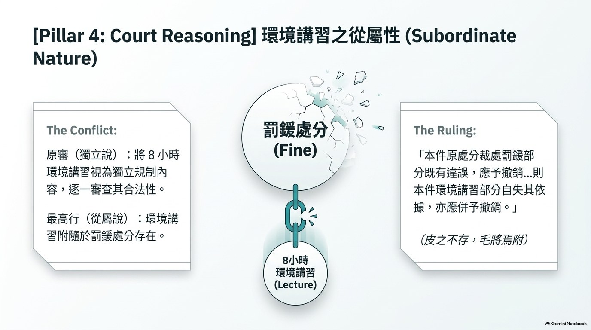
★ 一、對受罰事業之啟示
| # | 具體作法 |
|---|---|
| 1 | 逐款比對處分條款與追補條款（污染物種類、行為態樣、測量標準、規範目的是否同一） |
| 2 | 要求機關提出公式計算過程；未計算即主張裁量怠惰 |
| 3 | 檢視 C 因子之認定主體與前案同一性（同一製程？公私場所？相同條款？） |
| 4 | 檢視 E 因子有無「應加未加、應減未減」（尤以「稽查配合度良好」） |
| 5 | 檢視證據之時間密度；主張機關未依職權調查（行政程序法 §36） |
| 6 | ★ 援引 100 判 2081 之風險：該判決對受罰事業不利，宜避免主動援引 |
★ 二、對主管機關之啟示
| # | 具體作法 |
|---|---|
| 1 | 處分書所載條款須一次到位，不同「款」不得事後追加 |
| 2 | 裁最高額前必須先跑公式，並在處分書載明計算過程及「公式結果猶仍過輕」之理由 |
| 3 | 證據密度要求：現場密集檢測、依職權調取感測器完整時序資料 |
★ 本案雙軸定調：實體上從嚴（火災污染物構成 §32Ⅰ①）／程序上從嚴（裁最高額須先跑公式並舉證說明）
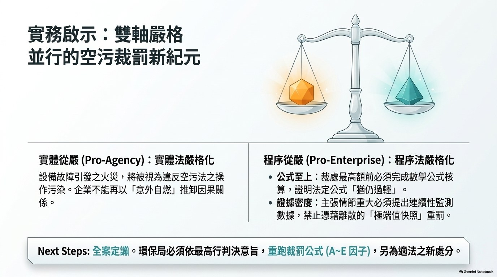
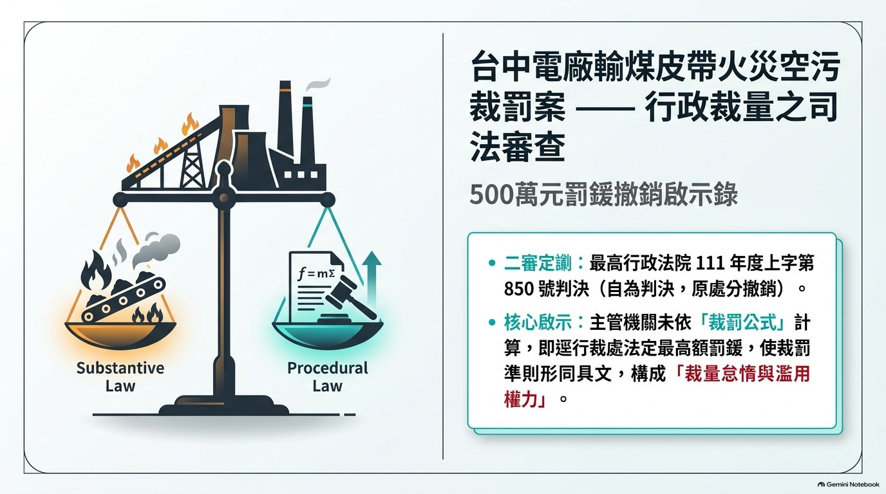